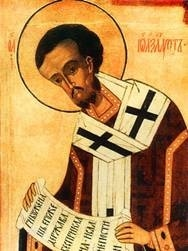

|

Святитель Иоанн Златоуст, архиепископ Константинопольский, один из трех великих вселенских святителей и учителей, родился в Антиохии Сирийской около 347 года, в семье военачальника Секунда, умершего вскоре после рождения сына. Мать святого Иоанна, Анфуса, оставшись в двадцать лет вдовой, не стала более выходить замуж и отдала все силы воспитанию сына, от нее Иоанн получил первые уроки в христианских истинах и благочестии.
Юноша учился у лучших философов и риторов и получил прекрасное светское образование. Еще не просвещенный святым крещением, которое, по обычаям того времени, принималось в зрелом возрасте, он был отправлен в Афины, для усовершенствования в красноречии и философии. Здесь он встретил весьма злобного врага: философ Анфимий, завидуя успехам Иоанна, злословил его, возбуждая против него ненависть других. Но святой, при помощи Божией, посрамил своего ненавистника и вместе с тем обратил многих ко Христу: когда на Анфимия, похулившего Спасителя, напал нечистый дух и стал мучить его, святой Иоанн велел бесноватому покаяться и прославить Господа. Нечистый дух оставил Анфимия, и вскоре он принял крещение со всем своим семейством.
Постигая эллинскую премудрость, будущий святитель избегал роскоши и соблазнов светской жизни. Он тщательно и глубоко изучал Священное Писание и стремился к молитвенному созерцанию, думая избрать монашеский путь. К этому побуждал святого и друг его Василий, уроженец той же Антиохии. Однако мать святого Иоанна умоляла его подождать, пока она не преставится, и лишь затем следовать избранным путем.
Вняв просьбам матери, святой решил до времени не уходить из дома, но стал вести отшельническую жизнь. Святитель Мелетий, архиепископ Антиохийский (память 12 февраля), полюбивший Иоанна, как сына, наставил его в вере и в 367 году крестил, а через три года поставил во чтеца. Когда же в 372 году святитель Мелетий был отправлен императором Валентом в ссылку, Иоанн учился у опытных наставников подвижнической жизни — пресвитеров Флавиана и Диодора Тарсийского. Особенное влияние на юношу оказал высокообразованный Диодор.
По смерти матери святой Иоанн, раздав имение, принял монашество, которое называл «истинной философией». Вскоре Иоанна и его друга Василия сочли достойными кандидатами для занятия епископских кафедр, но друзья, избегая назначения, решили удалиться в пустыню. Однако святой Иоанн, сам уклонившись по смирению от архиерейского сана, тайно содействовал посвящению Василия. В связи с этими событиями святой написал «Шесть слов о священстве». Тогда же им было написано «Послание к падшему монаху Феодору», в котором он увещал своего друга, отклонившегося от монашеского пути, вернуться к жизни иноческой; впоследствии Феодор стал епископом Мопсуетским.
Четыре года провел святой в трудах пустынножительства, подвизаясь под руководством опытного духовного наставника. Здесь были им написаны три книги «Против вооружающихся на ищущих монашества» и сочинение «Сравнение инока с царем». Два года святой Иоанн соблюдал полное безмолвие, находясь в уединенной пещере. Однако здоровье его пошатнулось, так что он уже не мог заботиться о себе, и ему пришлось возвратиться в Антиохию. Это случилось по промыслу Божию, дабы не был сокрыт светильник под спудом.
В 381 году святитель Мелетий Антиохийский рукоположил святого Иоанна во диакона, но вскоре святитель скончался, и Иоанн снова оставил Антиохию, удалившись в прежний монастырь. В эти годы им были написаны следующие сочинения: «О Провидении» («К Стагирию подвижнику»), «Книга о девстве», «К молодой вдове» (два слова), «Книга о святом Вавиле и против Юлиана и язычников».
В 386 году преемником Мелетия, архиепископом Антиохийским Флавианом, святой Иоанн был хиротонисан во пресвитера, с возложением обязанности проповедовать Слово Божие. Святой оказался блестящим проповедником и за редкий дар богодухновенного слова получил от паствы наименование «Златоуст». Удивительное красноречие богодухновенного проповедника привлекало к нему людей всех сословий и возрастов, не только православных христиан, но и еретиков, и даже язычников. Двенадцать лет святой, при стечении толп народа, обычно дважды в неделю, а иногда — каждодневно, проповедовал в храме, глубоко потрясая сердца слушателей. Многие записывали его проповеди и давали другим для чтения.
В пастырской ревности о наилучшем усвоении христианами Священного Писания святой Иоанн Златоуст обратился к толкованию Слова Божия. Среди его экзегетических творений — толкования на целые книги Священного Писания (Бытие, Псалтирь, Евангелия от Матфея и Иоанна, Деяния апостольские, Послания апостола Павла) и множество бесед на отдельные тексты святой Библии, а также поучения на праздники, в похвалу святых и слова апологетические (против аномеев, иудействующих и язычников).
Однако не за речи только пресвитер Иоанн был любим народом, а потому, что речи эти были созвучны самому строю Златоустовой жизни. Он выступил как защитник страждущих и обездоленных, как обличитель сребролюбия и жестокосердия. Святой ревностно исполнял заповедь попечения о бедных: при нем Антиохийская Церковь питала каждый день до 3000 дев и вдовиц, не считая заключенных, странников и больных.
Поучая жителей Антиохии вере и жизни христианской, святой Иоанн Златоуст являлся и утешителем своих сограждан во время общественных бедствий. В то время в Антиохии, вследствие наложения подати, тяжкой для бедных жителей города, произошло народное возмущение. Разъяренная толпа сбросила стоявшие в городе статуи императора и членов его семьи и разбила их в куски. Но вскоре ужас и отчаяние заступили место неистовой ярости: антиохийцы ждали царского гнева. Святитель Антиохийский Флавиан отправился к императору ходатайствовать за город, святого же Иоанна оставил утешать и врачевать страждущие души. Наступил Великий пост. Ежедневно святой обращался к народу с назидательным словом, обличая пороки своих сограждан и убеждая их исправиться и возложить упование на Бога. Император простил оскорбителей высочайшей власти, и весть о помиловании была привезена святителем Флавианом к самому дню Пасхи. В первый день праздника святой Иоанн Златоуст, по объявлении народу благой вести, сказал: «Радуйтесь радостью духовной, благодарите Бога не только за прекращение бедствий, но и за то, что Он послал их»,- поскольку бедствия помогли антиохийцам пробудиться к духовной жизни.
Слава замечательного пастыря и проповедника росла. В 397 году преставился Константинопольский архиепископ Нектарий, преемник святителя Григория Богослова (память 25 января), и красноречивый антиохийский священник (так его воспринимали в столице), по воле императора Аркадия (395-408), был вызван в Константинополь и 26 февраля 398 года поставлен архиепископом «Второго Рима».
Святитель Иоанн ревностно пас вверенное ему стадо Христово, обращая особое внимание на духовное совершенствование священства. Он утверждал в церковной жизни те евангельские принципы, по которым жил сам и от которых далеки бывают люди, ведущие изнеженную жизнь в столице. Страдающим духовными болезнями, такими как блуд, чревоугодие и корысть, святитель, как духовный врач, сначала частным образом делал грозные внушения, при необходимости возобновлял свои увещания открыто, а нераскаявшихся прогонял.
Средства, которые предназначались для архиепископа, святитель Иоанн обратил на содержание нескольких больниц и гостиниц для паломников, а сам довольствовался скудной пищей, отказываясь и от приглашений на званые обеды. Святой заботился об устройстве монастырей, обновляя старые и созидая новые обители; его попечением строились храмы, странноприимные дома и больницы.
Много трудов положил святой Иоанн Златоуст на устроение благолепного богослужения: составил чин Литургии, и доныне сохранившей его имя, написал не одну молитву, учредил крестные ходы, ввел антифонное пение за всенощным бдением.
Ревность святителя к утверждению христианской веры распространялась не только на жителей Константинополя и Византии, но и на другие страны: земли скифов (так называли греки предков славян), готов, кельтов, финикийцев, персов и прочих народов Европы, Малой Азии и Причерноморья. Им был поставлен епископ для находившейся в Крыму Церкви Боспора; для обращения ко Христу язычников святой Иоанн направлял миссионеров, писал послания, добиваясь возвращения в Церковь уклонившихся в ересь. Немало трудов он предпринял к устроению жизни Эфесской Церкви, которую разъедала язва симонии.
Храня единство Церкви, святой не позволил Гаине, могущественному готскому военачальнику, пользовавшемуся благоволением императора Аркадия, открыть в Константинополе арианский храм, а повелел в церкви во имя апостола язычников Павла совершать богослужение на готском языке. Спустя некоторое время Гаина, собрав многочисленное войско, пошел войной на Константинополь. По просьбе императора, не желавшего проливать кровь, святой Иоанн отправился во вражеский лагерь и своей проповедью избавил страну от нашествия.
Вельможа по имени Евтропий, царский любимец, преследуя своих врагов, уговорил императора отменить древний обычай, который заключался в следующем: люди, нарушившие гражданский закон и приговоренные к казни, могли укрыться в церкви и так спастись от смерти. Святитель Иоанн обличал Евтропия, считая уничтожение этого обычая насилием над Церковью. Спустя некоторое время сам Евтропий, впавший в немилость и приговоренный к смертной казни, прибежал в церковь и скрылся в алтаре под престолом, и святителю удалось отвести от него заслуженную кару.
Живя среди мира в столь высоком сане, святитель не оставлял иноческих подвигов: соблюдал строгий пост, спал мало, весь ум посвятив уразумению Божественного Писания. Святой вступился за преподобных пустынников египетских, иноков Нитрийской горы (память 10 июля), на которых Александрийский архиепископ Феофил воздвиг гонения, ложно обвиняя святых постников в ереси и, руками воинов, огнем и дымом изгоняя их из келий и избивая. Святитель Иоанн, будучи архиепископом Константинополя, взял нитрийских иноков под свое покровительство, призывая их не жаловаться императору и стремясь примирить иноков с их архиепископом, но сам был оклеветан, приобретя в лице Феофила врага.
Заботясь о своей пастве, святитель Иоанн Златоуст не боялся обличать и царствующих особ. Когда императрица Евдоксия, жена императора Аркадия, повелела отнять последнюю собственность у вдовы и детей опального вельможи, святой встал на их защиту. Гордая императрица затаила гнев на архипастыря, а недоброжелатели донесли ей, будто святитель в своем поучении о суетных женщинах имел в виду ее. В 403 году собор, составленный из иерархов, справедливо обличаемых ранее Златоустом, среди которых был и Александрийский архиепископ Феофил, постановил низложить святого Иоанна; за оскорбление императрицы ему грозила смертная казнь, однако император заменил казнь изгнанием. Возбужденный народ готов был защищать своего пастыря, но святитель, чтобы избежать волнений, сам отдал себя в руки властей.
Той же ночью в Константинополе произошло землетрясение; дворец императрицы сотрясался сильнее других, часть его разрушилась. Испуганная Евдоксия просила императора срочно вернуть святого и немедля послала письмо изгнанному пастырю, умоляя его вернуться. Однако уже через два месяца новый донос пробудил гнев императрицы.
Недалеко от храма Святой Софии, по повелению Евдоксии, была поставлена высокая колонна, увенчанная изображением императрицы. По этому поводу состоялись всевозможные игры и ликования, продолжавшиеся несколько дней и мешавшие церковному богослужению. Святой Иоанн увидел в этом кощунство и просил градоначальника прекратить бесчинные ликования вокруг колонны. Градоначальник не оказал ему никакого содействия, и тогда святитель, ревнуя об оскорблении святыни, произнес в церкви обличительное слово, которое начиналось словами: «Опять Иродиада беснуется, опять мятется, опять скачет и пляшет, опять главы Иоанновой ищет!»
Разгневанная Евдоксия умоляла императора созвать собор для осуждения Иоанна Златоуста. А к святителю между тем были подосланы наемные убийцы, но Господь не попустил святому погибнуть от их рук. В начале 404 года состоялся неправедный собор, постановивший удалить святого в Армению. В последнем слове к константинопольцам, скорбевшим о том, что они остаются без назидания, отправлявшийся в ссылку святитель Иоанн сказал: «Не мной началась проповедь, не мной и кончится».
По удалении святителя из столицы, пожар, начавшись в храме Святой Софии, обратил в пепел здание сената; вскоре последовали опустошительные набеги варваров, а в октябре 404 года в страшных муках умерла императрица Евдоксия. Даже язычники видели в этих событиях небесное наказание за неправедное осуждение угодника Божия.
Находясь в Кукузе, небольшом городе в Малой Армении, святой Иоанн Златоуст по-прежнему старался укреплять своих духовных чад: в многочисленных посланиях (их сохранилось 245) епископам Азии, Африки, Европы и особенно своим друзьям в Константинополе святитель утешал страдающих, наставлял и поддерживал своих приверженцев и, как и прежде, проповедовал Слово Божие. Однако телесные силы его слабели; зимой 406 года святитель уже был прикован к постели. Но враги не унимались: из столицы пришел приказ перевести святого в глухой Пифиунт (иначе — Питиус, нынешняя Пицунда, в Абхазии). С ним отправились некоторые из его учеников.
Истощенный болезнями святитель в сопровождении жестоких конвоиров три месяца в дождь и зной совершал свой последний переход. В городе Команы силы оставили его. Близ города находилась церковь святого мученика Василиска (память 22 мая), и здесь изгнанники остановились на ночлег. На другой день был праздник Воздвижения Честного Креста Господня. Ночью святитель был утешен явлением святого Василиска, сказавшего: «Не унывай, брат Иоанн! Завтра мы будем вместе». Утром воины поспешили отправиться в путь по воде, но, по промыслу Божию, вновь вынуждены были пристать к берегу около церкви мученика Василиска. Святитель умолил воинов позволить ему совершить Литургию. 14 сентября 407 года, причастившись Святых Христовых Таин, вселенский великий учитель, святитель Иоанн Златоуст отошел ко Господу со словами: «Слава Богу за все!»
Скорбь о его безвременной кончине жила в сердцах христиан. В 438 году ученик святителя Иоанна, святой Прокл, архиепископ Константинопольский (память 20 ноября), совершая богослужение в храме Святой Софии, произнес похвальное слово памяти своего учителя, в котором сравнил святого Иоанна Златоуста со святым Иоанном Предтечей, проповедовавшим покаяние и также пострадавшим за обличение пороков.
Народ стал единодушно умолять его ходатайствовать перед императором Феодосием II (408-450), сыном Евдоксии, о перенесении мощей Иоанна Златоуста из Коман, где был погребен святитель, в Константинополь. Убежденный святителем Проклом, император отправил в Команы посланников с серебряной ракой, дабы с почетом перевезти святые мощи. Жители Коман глубоко скорбели о том, что их лишают великого сокровища, однако противиться царскому указу не могли.
Императорские посланцы приступили ко гробу святителя, но не смогли поднять святые мощи. Тогда император написал послание святителю Иоанну, как живому, смиренно прося у него прощения за себя и за свою мать Евдоксию. Послание это прочли у гроба святого, положили на него и совершили всенощное бдение. Затем приступили к гробнице, легко подняли мощи и внесли их на корабль.
Гробница святителя Иоанна в с. Команы, Абхазия.
27 января 438 года весь Константинополь, во главе с архиепископом Проклом и императором Феодосием, встречал своего святителя. Рака с мощами была поставлена в церкви святой мученицы Ирины. Когда архиепископ открыл гроб, тело святителя Иоанна оказалось нетленным, от него исходило благоухание. Император, припав ко гробу со слезами, просил прощения за свою мать, императрицу Евдоксию. Весь день и всю ночь народ не отходил от раки.
Наутро мощи святителя были перенесены в соборную церковь Святых Апостолов. Когда рака с мощами была поставлена на патриаршем месте, весь народ едиными устами воскликнул: «Приими престол твой, отче!» — и святитель Прокл с клириками, стоявшие у раки, увидели, как святитель Иоанн открыл уста свои и произнес: «Мир всем!»
День кончины святителя Иоанна Златоуста (14 сентября) совпал с двунадесятым праздником Воздвижения, поэтому празднование его памяти установили на иной день — 13/26 ноября. Праздничной службой стали отмечать и день перенесения мощей святого в Константинополь — 27 января/9 февраля.
Несколько веков спустя установился третий праздник в честь святителя — Собор святых вселенских учителей и святителей Василия Великого, Григория Богослова и Иоанна Златоустого (30 января/12 февраля), и произошло это так.
В Константинополе долго происходили споры о том, кому из трех великих святителей следует отдавать предпочтение. Одна часть людей превозносила святителя Василия Великого (память 1 января), другая стояла за Григория Богослова (память 25 января), а третья почитала святителя Иоанна Златоуста (память 13 ноября и 27 января). Из-за этого среди христиан произошли церковные раздоры: одни называли себя василианами, другие — григорианами, третьи — иоаннитами. По воле Божией, в 1084 году митрополиту Евхаитскому Иоанну явились три святителя и, объявив, что они равны пред Богом, повелели прекратить споры и установить общий день празднования их памяти, замыкающий три отдельные январские празднования.
Икона Трех Святителей
|